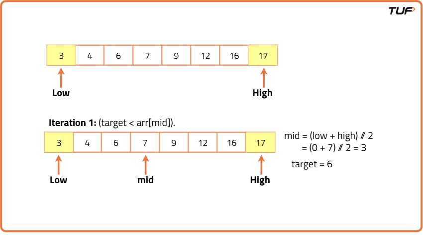
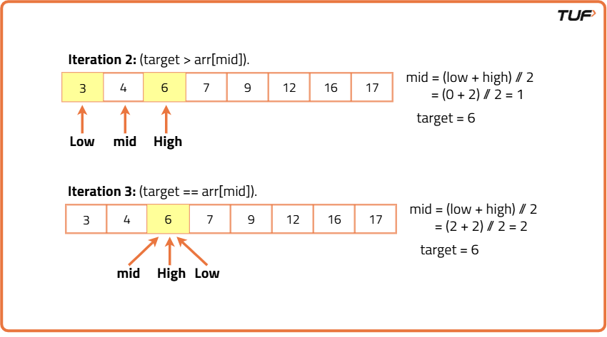

Binary Search: Explained
Problem statement: You are given a sorted array of integers and a target, your task is to search for the target in the given array. Assume the given array does not contain any duplicate numbers.

Disclaimer: Don’t jump directly to the solution, try it out yourself first.
Iterative Implementation
Algorithm
We will use a couple of pointers i.e. low and high to apply binary search. Initially, the low pointer should point to the first index and the high pointer should point to the last index.

Search space: The entire area between the low and the high pointer(including them) is considered the search space. Here, the search space is sorted.
Algorithm:
Now, we will apply the binary search algorithm in the given array:
- Divide the search space into 2 halves:
In order to divide the search space, we need to find the middle point of it. So, we will take a ‘mid’ pointer and do the following:
mid = (low+high) // 2 ( ‘//’ refers to integer division) - Compare the middle element with the target:
In this step, we can observe 3 different cases:- If arr[mid] == target: We have found the target. From this step, we can return the index of the target possibly.
- If target > arr[mid]: This case signifies our target is located on the right half of the array. So, the next search space will be the right half.
- If target < arr[mid]: This case signifies our target is located on the left half of the array. So, the next search space will be the left half.
- Trim down the search space:
Based on the probable location of the target we will trim down the search space.- If the target occurs on the left, we should set the high pointer to mid-1. Thus the left half will be the next search space.
- Similarly, if the target occurs on the right, we should set the low pointer to mid+1. Thus the right half will be the next search space.
The above steps will continue until either we found the target or the search space becomes invalid i.e. high < low. By definition of search space, it will lose its existence if the high pointer is appearing before the low pointer.
Dry-run:

Note: If the target is not present in the array, low and high will cross each other.
Note: For a better understanding, please watch the video at the bottom of the page.
Iterative implementation:
- Initially, the pointers low and high will be 0 and n-1(where n = size of the given array) respectively.
- Now inside a loop, we will perform the 3 steps discussed above in the algorithm section.
- The loop will run until either we fount the target or any of the pointers crosses the other.
Code
#include <bits/stdc++.h>
using namespace std;
class Solution {
public:
// Function to perform Binary Search on sorted array
int binarySearch(vector& nums, int target) {
int n = nums.size(); // size of the array
int low = 0, high = n - 1;
// Keep searching until low crosses high
while (low <= high) {
int mid = (low + high) / 2; // Find the middle index
if (nums[mid] == target) return mid; // Target found
else if (target > nums[mid]) low = mid + 1; // Search in right half
else high = mid - 1; // Search in left half
}
return -1; // Target not found
}
};
int main()
{
vector a = {3, 4, 6, 7, 9, 12, 16, 17}; // sorted array
int target = 6; // target element to search
Solution obj; // Create object of Solution class
int ind = obj.binarySearch(a, target);
if (ind == -1) cout << "The target is not present." << endl;
else cout << "The target is at index: " << ind << endl;
return 0;
}
Complexity Analysis
Time Complexity: In the algorithm, in every step, we are basically dividing the search space into 2 equal halves. This is actually equivalent to dividing the size of the array by 2, every time. After a certain number of divisions, the size will reduce to such an extent that we will not be able to divide that anymore and the process will stop. The number of total divisions will be equal to the time complexity. So the overall time complexity is O(logN), where N = size of the given array.
Space Complexity: 0(1), no extra space being used
Recursive Approach
Algorithm
Recursive implementation:
Pre-requisite: Recursion section
Approach:
Assume, the recursive function will look like this: binarySearch(nums, low, high). It basically takes 3 parameters i.e. the array, the low pointer, and the high pointer. In each recursive call, we will change the value of low and high pointers to trim down the search space. Except for this, the rest of the steps will be the same.
The steps are as follows:
- Divide the search space into 2 halves:
In order to divide the search space, we need to find the middle point of it. So, we will take a ‘mid’ pointer and do the following:
mid = (low+high) // 2 ( ‘//’ refers to integer division) - Compare the middle element with the target and trim down the search space:
In this step, we can observe 3 different cases:- If arr[mid] == target: We have found the target. From this step, we can return the index of the target, and the recursion will end.
- If target > arr[mid]: This case signifies our target is located on the right half of the array. So, the next recursion call will be binarySearch(nums, mid+1, high).
- If target < arr[mid]: This case signifies our target is located on the left half of the array. So, the next recursion call will be binarySearch(nums, low, mid-1).
- Base case: The base case of the recursion will be low > high. If (low > high), the search space becomes invalid which means the target is not present in the array.
Note: For a better understanding, please watch the video at the bottom of the page.
Code
#include <bits/stdc++.h>
using namespace std;
class Solution {
public:
// Recursive Binary Search function
int binarySearch(vector& nums, int low, int high, int target) {
if (low > high) return -1; // Base case: target not found
// Find middle index
int mid = (low + high) / 2;
// If target is found at mid
if (nums[mid] == target) return mid;
// If target is greater, search right half
else if (target > nums[mid])
return binarySearch(nums, mid + 1, high, target);
// Otherwise, search left half
return binarySearch(nums, low, mid - 1, target);
}
// Public function to initiate search
int search(vector& nums, int target) {
return binarySearch(nums, 0, nums.size() - 1, target);
}
};
int main()
{
vector a = {3, 4, 6, 7, 9, 12, 16, 17}; // sorted array
int target = 6; // target element to search
Solution obj; // Create object of Solution class
int ind = obj.search(a, target);
if (ind == -1) cout << "The target is not present." << endl;
else cout << "The target is at index: " << ind << endl;
return 0;
}
Complexity Analysis
Time Complexity: In the algorithm, in every step, we are basically dividing the search space into 2 equal halves. This is actually equivalent to dividing the size of the array by 2, every time. After a certain number of divisions, the size will reduce to such an extent that we will not be able to divide that anymore and the process will stop. The number of total divisions will be equal to the time complexity. So the overall time complexity is O(logN), where N = size of the given array.
Space Complexity: 0(1), no extra space being used